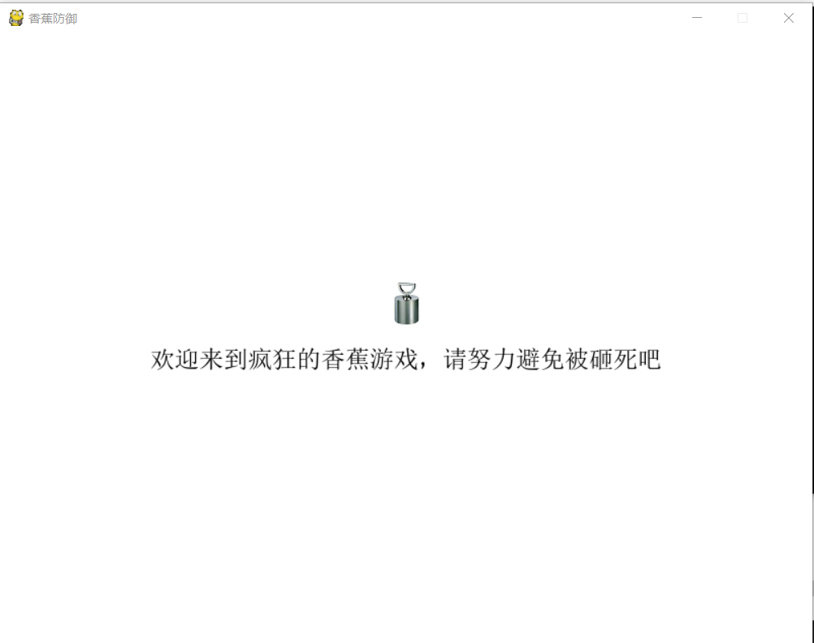
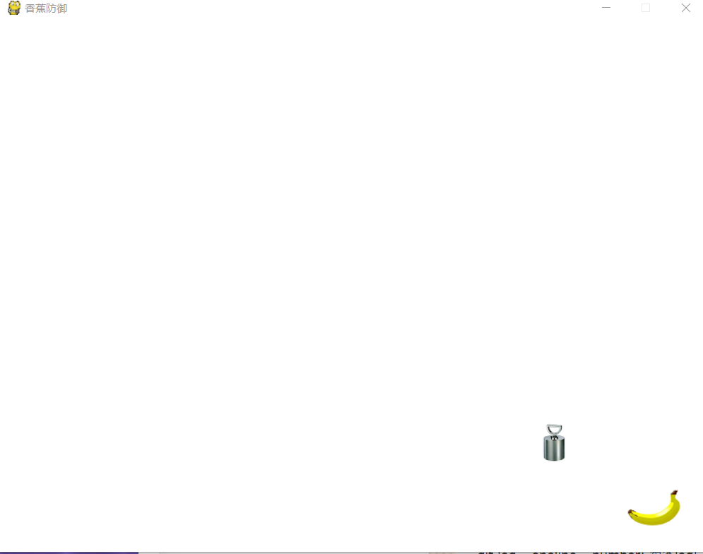

本文主要是作为python练习项目，文中代码来源Python基础教程(第3版).[挪]Magnus Lie Hetland
本文主要是把原书中的squish游戏项目进行代码实现，并对实现过程中遇到的问题和解决的bug进行记录
全部代码见连接：squish
首先把项目中的三个模块代码贴上来
配置模块config.py
1
2
3
4
5
6
7
8
9
10
11
12
13
14
15
16
17
18
19
20
21
22
23
24
25
26
27
28
29
30#!/usr/bin/env python
# -*- encoding: utf-8 -*-
'''
@File : config.py
@Time : 2019/04/23 14:58:47
@Author : BBCPicker
@Version : 1.0
@Contact : 291294719@qq.com
@Desc : 配置速度、颜色、游戏框架大小等信息
'''
#设置图片路径
banana_image = r'\images\banana.png'
weight_image = r'\images\weight.png'
splash_image = r'\images\weight.png'
#配置游戏外观
srceen_size = (800, 600)
backgroud_color = (255, 255, 255)
margin = 30
full_screen = 1
font_size = 24
#设置游戏行为
drop_speed = 1
banana_speed = 10
speed_increase = 1
weights_per_level = 10
banana_pad_top = 40
banana_pad_side = 20游戏对象模块objects.py
1
2
3
4
5
6
7
8
9
10
11
12
13
14
15
16
17
18
19
20
21
22
23
24
25
26
27
28
29
30
31
32
33
34
35
36
37
38
39
40
41
42
43
44
45
46
47
48
49
50
51
52
53
54
55
56
57
58
59
60
61
62
63
64
65
66
67
68
69
70
71
72
73
74
75
76
77
78
79
80
81
82
83
84#!/usr/bin/env python
# -*- encoding: utf-8 -*-
'''
@File : objects.py
@Time : 2019/04/23 15:05:36
@Author : BBCPicker
@Version : 1.0
@Contact : 291294719@qq.com
@Desc : 本游戏使用的游戏对象
'''
import pygame
import config
import os
import sys
from random import randrange
'''
游戏Squish中所有精灵（sprite）的超类，构造函数加载一幅图像，设置精灵的外接矩形和移动范围。
移动范围取决于屏幕尺寸和边距
'''
class SquishSprite(pygame.sprite.Sprite):
def __init__(self, image):
super().__init__()
self.image = pygame.image.load(sys.path[0]+image).convert()
self.rect = self.image.get_rect()
screen = pygame.display.get_surface()
shrink = -config.margin * 2
self.area = screen.get_rect().inflate(shrink, shrink)
'''
从天而降的铅锤，使用SquishSprite的构造函数来设置表示铅锤的图像，
并以其构造函数的一个参数指定速度下降
'''
class Weight(SquishSprite):
def __init__(self, speed):
super().__init__(config.weight_image)
self.speed = speed
self.reset()
# 将铅锤移到屏幕顶端使其刚好看不到，并房子啊一个随机的水平位置
def reset(self):
x = randrange(self.area.left,self.area.right)
self.rect.midbottom = (x, 0)
# 根据铅锤的速度垂直向下移动相应的距离。同时，根据铅锤是否已经到到屏幕底部相应的设置属性landed
def update(self):
self.rect.top += self.speed
self.landed = self.rect.top >= self.area.bottom
'''
绝望的香蕉，他是用SquishSprite的构造函数来设置香蕉图像，并停留在屏幕底部附近，
且水平位置由鼠标的当前位置决定（有一定的限制）
'''
class Banana(SquishSprite):
def __init__(self):
super().__init__(config.banana_image)
self.rect.bottom = self.area.bottom
# 这些内边距表示图像中不属于香蕉的部分
#如果铅锤进入这些区域，并不认为它砸到了香蕉
self.pad_top = config.banana_pad_top
self.pad_side = config.banana_pad_side
# 将香蕉中心的X坐标设置为鼠标的当前X坐标，在使用矩形的方法clamp确保香蕉位于允许的移动范围内
def update(self):
self.rect.centerx = pygame.mouse.get_pos()[0]
self.rect = self.rect.clamp(self.area)
'''
判断香蕉是否与铅锤发生了碰撞。这里没有直接使用矩形的方法colliderect，而是先使用
矩形的方法inflat以及pad_sid和pad_top计算出一个新的矩形，
这个矩形不包含香蕉图像顶部和两遍的空白区域
'''
def touches(self, other):
# 通过提出内边距来计算bounds
bounds = self.rect.inflate(-self.pad_side,-self.pad_top)
# 将bounds移动到与香蕉底部对齐
bounds.bottom = self.rect.bottom
return bounds.colliderect(other.rect)主程序模块 squish.py
1
2
3
4
5
6
7
8
9
10
11
12
13
14
15
16
17
18
19
20
21
22
23
24
25
26
27
28
29
30
31
32
33
34
35
36
37
38
39
40
41
42
43
44
45
46
47
48
49
50
51
52
53
54
55
56
57
58
59
60
61
62
63
64
65
66
67
68
69
70
71
72
73
74
75
76
77
78
79
80
81
82
83
84
85
86
87
88
89
90
91
92
93
94
95
96
97
98
99
100
101
102
103
104
105
106
107
108
109
110
111
112
113
114
115
116
117
118
119
120
121
122
123
124
125
126
127
128
129
130
131
132
133
134
135
136
137
138
139
140
141
142
143
144
145
146
147
148
149
150
151
152
153
154
155
156
157
158
159
160
161
162
163
164
165
166
167
168
169
170
171
172
173
174
175
176
177
178
179
180
181
182
183
184
185
186
187
188
189
190
191
192
193
194
195
196
197
198
199
200
201
202
203
204
205
206
207
208
209
210
211
212
213
214
215
216
217
218
219
220
221
222
223
224
225
226
227
228
229
230
231
232#!/usr/bin/env python
# -*- encoding: utf-8 -*-
'''
@File : squish.py
@Time : 2019/04/23 16:06:19
@Author : BBCPicker
@Version : 1.0
@Contact : 291294719@qq.com
@Desc : Squish游戏的主逻辑
'''
import os
import sys
import pygame
from pygame.locals import *
import objects
import config
'''
游戏状态超类，能够处理时间以及在指定表面上显示自己
'''
class State:
# 只处理退出事件的默认事件处理
def handle(self, event):
if event.type == QUIT:
sys.exit()
if event.type == KEYDOWN and event.key == K_ESCAPE:
sys.exit()
# 在首次显示状态时使用，他使用背景色填充屏幕
def first_display(self, screen):
screen.fill(config.backgroud_color)
pygame.display.flip()# 调用flip，把修改反映出来
# 在后续显示状态时使用，默认什么都不做
def display(self, screen):
pass
'''
游戏关卡，计算落下了多少个铅锤，移动精灵并执行其他与游戏逻辑相关的任务
'''
class Level(State):
def __init__(self, number = 1):
self.number = number
# 计算还需要多开多少个铅锤才能通过当前关卡
self.remaining = config.weights_per_level
speed = config.drop_speed
speed += (self.number - 1) * config.speed_increase# 每过一关都将速度提高
# 创建铅锤和香蕉
self.weight = objects.Weight(speed)
self.banana = objects.Banana()
both = (self.weight,self.banana)
self.sprites = pygame.sprite.RenderUpdates(both)
#更新游戏状态
def update(self, game):
#更新所有的精灵
self.sprites.update()
#如果香蕉和铅锤发生了碰撞，就让游戏切换到GameOver状态
if self.banana.touches(self.weight):
game.next_state = GameOver()
# 否则，如果铅锤一落到地上就将其复位
# 如果躲开了当前关卡内的所有铅锤，就让游戏切换到Levelcleared状态
elif self.weight.landed:
self.weight.reset()
self.remaining -= 1
if self.remaining == 0:
game.next_state = LevelCleared(self.number)
'''
在第一次显示（清屏）后显示状态。不同于firstDisplay，这个方法调用pygame.display.update
并向他传递一个需要更新的矩形列表，这个列表是由self.sprites.draw提供的
'''
def display(self, screen):
screen.fill(config.backgroud_color)
updates = self.sprites.draw(screen)
pygame.display.update(updates)
'''
游戏的暂停状态，用户可以通过按任何键盘键或者淡季鼠标来结束这种状态
'''
class Pause(State):
finished = 0 # 用户结束暂停初始状态
image = r'\images\gamelogo.png' # 如果需要显示图像，将这个属性设置为一个文件名
text = '此游戏仅为教学娱乐，有问题请联系291294719@qq.com' # 将这个属性设置为一个说明性文本
'''
处理事件：将这项任务委托给State(它只处理退出事件)，并对按键和鼠标单击做出响应。
如果用户按下了键盘键或单击了鼠标，就将self.finished设置为True
'''
def handle(self, event):
State.handle(self, event)
if event.type in [MOUSEBUTTONDOWN, KEYDOWN]:
self.finished = 1
'''
更新关卡：如果用户按下键盘或点击鼠标就让游戏切换到self.next_state()返回的状态
'''
def update(self, game):
if self.finished:
game.next_state = self.next_state()
'''
在首次显示暂停状态时调用，它绘制图像并渲染文本
'''
def first_display(self, screen):
# 首先通过使用背景色填充屏幕来清屏
screen.fill(config.backgroud_color)
# 创建一个使用默认外观和指定字号的Font对象
# font = pygame.font.Font(None, config.font_size)
font = pygame.font.SysFont('simsunnsimsun', config.font_size) # 为了显示中文
# 获取self.text 中的文本，但忽略开头和末尾的空行
lines = self.text.strip().splitlines()
# 获取每行文本的高度并计算文本的总高度
height = len(lines) * font.get_linesize()
# 计算文本的位置（屏幕居中）
(center,top) = screen.get_rect().center
top -= height // 2
if self.image:
image = pygame.image.load(sys.path[0]+self.image).convert()
r = image.get_rect()
# 将文本下移图像高度一般的距离
top +=r.height // 2
# 将图像放在文本上方20像素处
r.midbottom = (center,top - 20)
screen.blit(image, r)
antialias = 1 # 消除文本的锯齿
black = (0,0,0) # 使用黑色渲染文本
# 从计算得到的top处开始渲染所有的文本行
# 每渲染一行都向下移动font.get_linesize()像素
for line in lines:
text = font.render(line.strip(), antialias, black)
r = text.get_rect()
r.midtop = (center, top)
screen.blit(text, r)
top += font.get_linesize()
# 显示所做的所有修改
pygame.display.flip()
'''
显示一些游戏信息的简单暂停状态，和Level状态
'''
class Info(Pause):
next_state = Level
text = '''在这个游戏中你是一个香蕉，你需要努力躲避下落的铅锤以避免被砸到，否则就游戏结束'''
'''
显示一些游戏信息的简单启动状态，和INFO状态
'''
class StartUp(Pause):
next_state = Info
image = config.splash_image
text ='''欢迎来到疯狂的香蕉游戏，请努力避免被砸死吧'''
'''
显示一些游戏信息的过关暂停状态，和Level状态
'''
class LevelCleared(Pause):
def __init__(self, number):
self.number = number
self.text = '''关卡 {} 已经通过，点击开始下一关'''.format(self.number)
def next_state(self):
return Level(self.number + 1)
'''
游戏结束状态
'''
class GameOver(Pause):
next_state = Level
text = '''游戏结束，点击重新开始，点【ESC】退出'''
'''
负责主事件循环（包括在不同游戏状态之间切换）的游戏对象
'''
class Game:
def __init__(self, *args):
# 获取游戏和图像所在的目录
path = os.path.abspath(args[0])
dir = os.path.split(path)[0]
# 切换到这个目录，以便之后能够打开图像文件
os.chdir(dir)
# 最初不处于任何状态
self.state = None
# 在第一次事件选好迭代中切换到StartUp状态
self.next_state = StartUp()
def run(self):
# 设置变量，执行初始化任务并进入主事件循环
pygame.init() # 初始化所有的pygame模块
# 决定在窗口还是在整个屏幕中显示游戏
flag = 0 # 默认在窗口中显示游戏
if config.full_screen:
flag = FULLSCREEN # 全屏模式
screen_size = config.srceen_size
screen = pygame.display.set_mode(screen_size, flag)
pygame.display.set_caption('香蕉防御')
pygame.mouse.set_visible(False)
#主事件循环
while True:
# 如果nextState被修改，就切换到修改后的状态并显示它（首次）
if self.state != self.next_state:
self.state = self.next_state
self.state.first_display(screen)
# 将时间处理工作委托给当前状态
for event in pygame.event.get():
self.state.handle(event)
self.state.update(self)
self.state.display(screen)
'''
启动游戏
'''
if __name__ == '__main__':
game = Game(*sys.argv)
game.run()说一下实现过程中遇到的两个问题
- 图片显示的问题,原书中的代码直接加载的是图片的相对路径,这样子在命令行运行程序时没有问题，但是在IDE直接运行就会报”找不到图片的问题”,所以需要在图片路径前加上获取绝对路径的代码
1
2#self.image = pygame.image.load(r'\banana.png').convert()
self.image = pygame.image.load(sys.path[0]+r'\banana.png').convert()
- 汉字显示的问题,原书中的显示信息都是英文，我在改成中文后运行程序显示的都是乱码，解决方案是修改字体设置的代码
1
2
3# 创建一个使用默认外观和指定字号的Font对象
# font = pygame.font.Font(None, config.font_size)
font = pygame.font.SysFont('simsunnsimsun', config.font_size) # 为了显示中文
- 图片显示的问题,原书中的代码直接加载的是图片的相对路径,这样子在命令行运行程序时没有问题，但是在IDE直接运行就会报”找不到图片的问题”,所以需要在图片路径前加上获取绝对路径的代码
以下是游戏运行效果图

